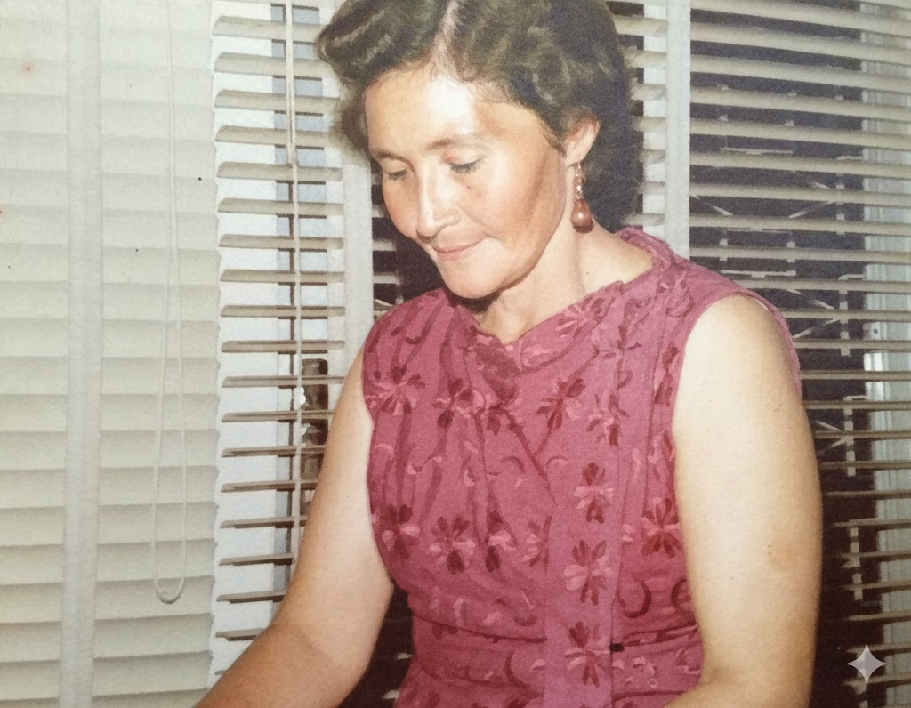
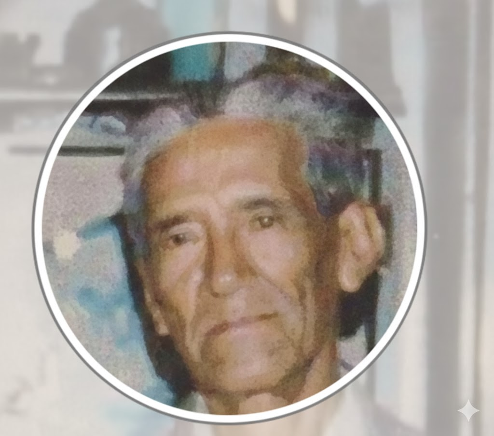

'Mi Testimonio de Jesucristo'
'Hoy al meditar sobre la Navidad quiero compartir mi testimonio con ustedes del Salvador Jesucristo: Se, que esa noche en Belén Nació un niño que era diferente a todos los niños que habían nacido antes. Ese niño nunca se mancharía con el pecado y Sería perfectamente obediente al Padre en todas las cosas Testifico que es el Hijo Unigénito del Padre, por tanto, tendría poder sobre la vida y la muerte tanto espiritual como temporal. Que como toda persona moriría pero que a diferencia de todos se levantaría desde los muertos en gloriosa resurrección para dar inmortalidad a todas sus creaciones Ese niño, era un niño Dios que había descendido del cielo para condescender con los hombres y mostrarnos el camino de vuelta a Nuestro Padre Celestial Testifico que El Es el Cristo que vino para hacer la voluntad del Padre y que la voluntad del padre era que El Cristo, inocente, santo y puro fuese entregado a la voluntad de los hombres inicuos y padeciese los tormentos de nuestras transgresiones a fin de que nosotros fuésemos perdonados de nuestras iniquidades y que habiendo el pagado las consecuencias de los pecados e injusticias de todos los hombres pudiese socorrer a aquellos que vienen a él. Finalmente testifico que Dios me ha concedido saber en forma personal e independiente de toda otra criatura que él es mi Salvador, mi Redentor y mi Dios lo amo por lo que hizo por mí al permitirme volver de nuevo a mi Padre Celestial, jamás podré pagarle, le agradezco por beber hasta la última gota de esa amarga copa. Sé que él es un Dios de Verdad y que no puede Mentir, que tiene poder y preeminencia sobre todas las cosas y que ama a toda la humanidad y ha hecho cuanto es necesario para su bienestar, sé que por medio de la expiación de Jesucristo y la obediencia a sus mandamientos, todas las cosas son posibles para nosotros, gracias a los méritos y poder del gran mesías, el hijo de Dios' -Carlos Arredondo Castro
Mi arbol genealogico
Graciela Elizabeth Castro Lopez de Arredondo, Mi madre
'Abuelita Chela'
1926-1998
Mi madre era una mujer de baja estatura (1.49) ojos cafés, pelo castaño. Era linda, trabajadora, luchadora, perseverante, amorosa, servicial, de buen ánimo, y sobre todo era una mujer fiel. Mi mamá siempre luchó mucho por su familia y se esforzaba bastante en ayudar a tener el sustento en la casa. Ella amaba mucho a su Madre, Everilda, y también colaboraba para que no le faltara nada. Recuerdo que todos los cumpleaños o Día de la Madre, le gustaba ser la primera en llegar a visitarla. Madrugábamos para poder llegar y estar allí antes de que se levantará, y en su puerta cantábamos Las Mañanitas y le quemábamos cohetes. Cuando mi abuelita murió mi mamá sufrió bastante, porque sentía mucho vacío y la hacía falta llegar todas las semanas a visitarla, siempre fue constante en sus visitas. Mi mamá era muy previsora, recuerdo que cuando fue el terremoto tenía almacenados víveres y hasta agua. Cocinaba rico y a lo más sencillo le daba la mejor sazón. Fue un gran ejemplo de servicio, a la familia, amigos, vecinos, en la Iglesia, Siempre estaba ayudando a alguien, y fue parte de lo que aprendí de mis papas; por que en casa siempre habia alguien mas viviendo con nosotros, ( por que no tenía papas, porque su situación ecónomica andaba mal, etc) y no importaba la situación economica si estaban mal o bien, ellos siempre le brindaban apoyo a cualquier persona, tuvo la bendición de tener a un niño Carlos Barrientos, a quien lo tuvo desde los once años, lo puso a una escuelita, y le enseño del evangelio, el pudo servir una misión y casarse en un templo, tambien a un jóven Francisco Diaz, a quien tambien apoyo mucho, sus padres habian fallecido, y nuestra casa fue un refugio para el, fue a la misión, se sello en un templo. Igual que mi papá ella era muy amigable, y se daba a querer mucho, con las personas que la llegaban a conocer. Me encantaba que en la epoca de la adolecencia de mis hermanos ( yo era pequeña) ponían su música, cantaban, bailaban, llegaban sus amigos, y ella estaba dispuesta a aceptarlos, y aceptar su musica, e incluso se aprendía las canciones, tambien llegaban con amigos a las noches de hogar y era feliz preparando refrigerio para darles, fue misionera de estaca ya en su vejez andaba con los elderes predicando el evangelio!!! Me siento bendecida por mi Madre y su ejemplo. (escrito por mi hermana Jeannethe)
Manuel Isauro Arredondo, Mi padre
'Abuelito Meme'
(17 Junio 1913 - 19 de Julio 1997)
Mi Padre era un hombre honrado, humilde y trabajador, se caso dos veces y mi madre fue su segunda esposa, fue muy emprendedor tuvo tres tiendas que llamábamos lecherías, donde se vendían quesos, leche, crema, mantequilla etc. Todos trabajamos en desde pequeños en estos negocios. Mi padre era concocido por proveer estos productos e las zonas 8,9 y 10 de la ciudad de Guatemala. Tenía carácter fuerte, pero era noble y amoroso. Era muy conocido en Antigua, donde vendía sus productos. Fue el primero en bautizarse en la iglesia dándonos a todos el ejemplo, su bautismo cambio totalmente su vida, a partir de ese día fue fiel a sus convenios bautismales.